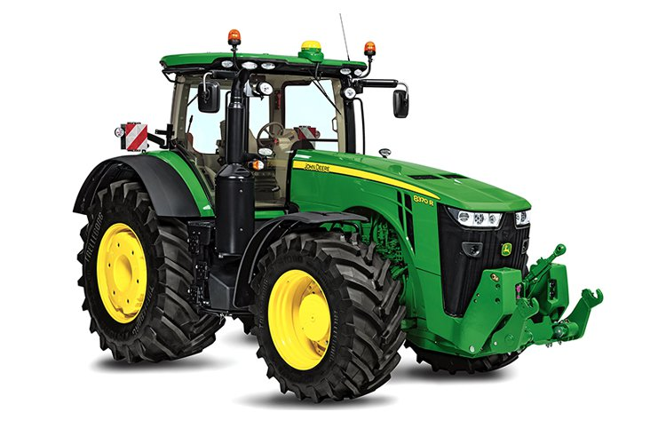
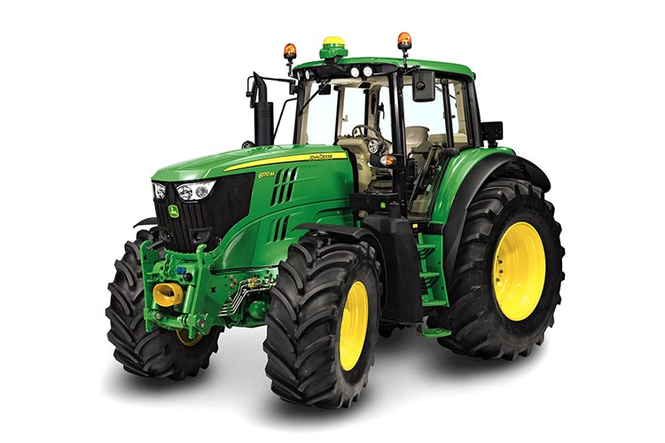

Робота
Вячеслава Сіроштана
Група СТВ-108

Технології точного землеробства. Наші продукти для точного землеробства перетворюють грубі машини на розумних помічників. Вони здатні вивільнити приховану цінність і найменшого зерна, і величезної рослини. Наші зручні та сучасні технології працюють на вас, а не навпаки.

Землерообство (хліборобство, рільництво) — провідна галузь сільськогосподарського виробництва, основою якої є використання землі з метою вирощування сільськогосподарських культур; наука, що вивчає загальні прийоми вирощування сільськогосподарських культур і розробляє способи раціонального використання землі та підвищення родючості ґрунту